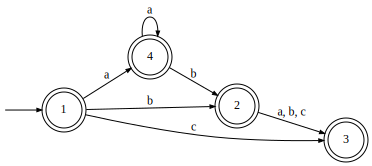
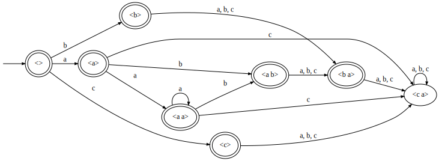
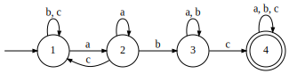

Recall that a variety is a class of monoids closed under taking products, submonoids, and quotients. The union and intersection operations can be implemented as a monoid product followed by taking a submonoid and then a quotient by the appropriate new Myhill relation. So classes defined by monoid varieties are closed under these operations. A language and its complement share the same monoid, so these classes are closed under the Boolean operations.
So far we have discussed monoids in the finite (regular), aperiodic (star-free), trivial (1), and semilattice (CB) varieties. We have also discussed a general method for making a semigroup-based class generalizing the monoid-based one: if 𝐕 is a variety of monoids, then 𝐋𝐕 is a variety of semigroups defined by 𝑒𝑆𝑒∈𝐕. This gave us generalized definite (from 1) and locally testable (from CB). For each 𝐋𝐕 class, there is a tier-based variant, 𝐓𝐋𝐕, characterized by the language being in 𝐋𝐕 after removing all of the symbols that form self-loops everywhere. Note that there should also be an 𝐌𝐓𝐋𝐕 which is actually closed under the Boolean operations, but these multi-tier classes do not appear in our tables.
The following table summarizes the classes discussed so far, as well as the three new ones from this session. Inclusions hold downward (GD is contained in LT for example) and leftward (CB is contained in LT). One diagonal is then guaranteed (LT contains 1), but the other is not (CB and GD are incomparable).
| 𝐕 | 𝐋𝐕 | 𝐓𝐋𝐕 | |
|---|---|---|---|
| 𝐅𝐢𝐧 | Reg | ? | ? |
| 𝐀𝐩 | SF | ? | ? |
| 𝐉 | PT | LP | TLP |
| 𝐉𝐈 | CB | LT | TLT |
| 𝟏 | 1 | GD | TGD |
Named for James Alexander Green, Green’s relations are commonly used to describe the structure of semigroups and monoids. We only really need one of them right now, but we’ll introduce three. Represented by fancy L (𝓛), R (𝓡), and J (𝓙), they are defined as follows:
| 𝑎𝓛𝑏 | 𝑀𝑎=𝑀𝑏 |
| 𝑎𝓡𝑏 | 𝑎𝑀=𝑏𝑀 |
| 𝑎𝓙𝑏 | 𝑀𝑎𝑀=𝑀𝑏𝑀 |
There is a lot to be said about these relations, but all we need is that a monoid is trivial under a relation ⁓ iff 𝑎⁓𝑏 holds in all and only those cases where 𝑎=𝑏. As an aside, there is an 𝓗 relation where star-free is 𝓗-trivial.
The base class of this session is the piecewise testable (PT) class, characterized by 𝓙-trivial monoids. That is, 𝑎𝓙𝑏 iff 𝑎=𝑏, or in other words 𝑀𝑎𝑀=𝑀𝑏𝑀 iff 𝑎=𝑏. These are the languages in which there is some integer 𝑘 for which the language is defined by Boolean combinations of subsequences of length up to 𝑘. That is, if two words have the same set of subsequences of length up to 𝑘, then they must be treated identically, both in or both out. A subsequence is like a substring but using general precedence instead of adjacency.
As an exercise, one might show that all semilattices with identity (commutative and idempotent monoids) are 𝓙-trivial. This would prove the containment of the CB row in the newly generated PT row.
For now, let us see an example of a piecewise testable language. This one is defined as follows:

Its syntactic monoid is shown below both as a graph and as a table.

| λ | a | b | c | aa | ab | ba | ca | |
|---|---|---|---|---|---|---|---|---|
| λ | λ | a | b | c | aa | ab | ba | ca |
| a | a | aa | ab | ca | aa | ab | ba | ca |
| b | b | ba | ba | ba | ca | ca | ca | ca |
| c | c | ca | ca | ca | ca | ca | ca | ca |
| aa | aa | aa | ab | ca | aa | ab | ba | ca |
| ab | ab | ba | ba | ba | ca | ca | ca | ca |
| ba | ba | ca | ca | ca | ca | ca | ca | ca |
| ca | ca | ca | ca | ca | ca | ca | ca | ca |
There are no self-loops on the identity, so we know we can’t need a tier-based class to describe this. (It is in fact locally testable, strictly local even, if you want to verify that.) We can show that it is piecewise testable, in one of two ways. First, we could construct the two-sided ideal of every element. For each 𝑥, find 𝑥𝑀 (the set of elements in the 𝑥 row of the table), then then find 𝑀𝑥𝑀 as the union of the columns of each result.
| 𝑥 | 𝑥𝑀 | 𝑀𝑥𝑀 |
|---|---|---|
| λ | {λ,a,b,c,aa,ab,ba,ca} | {λ,a,b,c,aa,ab,ba,ca} |
| a | {a,aa,ab,ca} | {a,aa,ab,ba,ca} |
| b | {b,ba,ca} | {b,ab,ba,ca} |
| c | {c,ca} | {c,ba,ca} |
| aa | {aa,ab,ca} | {aa,ab,ca} |
| ab | {ab,ba,ca} | {ab,ba,ca} |
| ba | {ba,ca} | {ba,ca} |
| ca | {ca} | {ca} |
This however requires a ton of work, computing all of these ideals for every element. (It is however the method that plebby and the LTK currently uses.)
First, let us define a notation. 𝑀𝑒 is the submonoid of 𝑀 generated by the set {𝑔 : 𝑒=𝑢𝑔𝑣 for some 𝑢 and 𝑣}. Recall that the elements of the monoid are equivalence classes of strings. Intuitively, 𝑀𝑒 is the set of elements that include words made up of only letters that appear in some word in 𝑒. This is dealing with a restricted alphabet, just like tier-based things.
One can show that a language is 𝓙-trivial iff for all idempotents 𝑒, it holds that 𝑀𝑒𝑒𝑀𝑒=𝑒. Note in our table above we have only three idempotents: 𝐸(𝑀)={λ,aa,ca}. We still need to construct the two-sided ideals 𝑀𝑥𝑀 for each letter 𝑥, but we don’t have to do this for the entire monoid. Notice that aa is in the two-sided ideal of a, but not of any other letter. So the subalphabet we use is just {a}. And λ is not in any two-sided ideals, so its subalphabet is ∅. And ca is a zero, so its subalphabet is the entire alphabet.
| 𝑒 | 𝑀𝑒 | 𝑀𝑒𝑒 | 𝑀𝑒𝑒𝑀𝑒 |
|---|---|---|---|
| λ | {λ} | {λ} | {λ} |
| aa | {λ,a,aa} | {aa} | {aa} |
| ca | 𝑀 | {ca} | {ca} |
Now we see that 𝑀𝑒𝑒𝑀𝑒=𝑒 for all idempotents 𝑒, verifying piecewise testability with much less work.
One can prove that in a PT language’s syntactic monoid, all cycles are self-loops and all idempotents have self-loops on every symbol that reaches them. The implication is that for an alphabet Σ, there can be only 2|Σ| idempotents. So for an alphabet of size 3 like we’ve mostly been dealing with, there can only be up to 8 idempotents no matter how big the monoid is.
Replace 𝑀 by 𝑒𝑆𝑒 in the definition of piecewise testable in order to get its “locally” variant, here called LP. Note that it may not be the case that every 𝑎 is in 𝑒𝑆𝑒, so we need to restrict ourselves to elements of the form 𝑒𝑎𝑒. But then a language is LP iff 𝑒𝑆𝑒𝑒𝑎𝑒𝑒𝑆𝑒=𝑒𝑆𝑒𝑒𝑏𝑒𝑒𝑆𝑒 implies 𝑒𝑎𝑒=𝑒𝑏𝑒 for all idempoents 𝑒 and for all elements 𝑎 and 𝑏.
We didn’t discuss an example of this, but the language requiring an “ab” substring eventually followed by a “c”, shown below as a DFA, is in this class. One may as an exercise construct its 12-state monoid and verify that it is not in TLT or anything that contains, nor is it in PT, but it is in LP. Each local subsemigroup is 𝓙-trivial.

We haven’t proven for sure that LP is “piecewise-locally testable”, but if it is, then it would be those languages where words with the same set of 𝑗-subsequences made up of 𝑘-blocks (subsequences of substrings) are treated identically, both in or both out.
Oh and there’s a tier-based class, TLP. We know how those go. Take the above language and stick self-loops on “d” everywhere and you have a member of TLP that isn’t in LP.
By this point, we’ve reached what we believe to be an upper bound of complexity on phonological surface patterns. Stress patterns for example are all contained in a subclass of LP. There are more classes above where we have left off, including those defined by first-order logics restricted to two variables. We also have not discussed locally threshold testable, which corresponds to first-order definability with successor alone. This class is contained by LP and contains LT, so it would be somewhere in the middle there. Other classes might be discussed as the need arises, but for now we end the exploration of stringsets and move on to functions.
Note that there are many possible classes between the rows of our table. Any time you propose a class that is describable by a monoid variety, it will have a place in the leftmost column. The “locally” variant will then exist, and its tier-based variant as well. By another generalization we have not yet encountered, there will also be new rows which will continue to spiral upward. In other words, proposing one class now yields several others.